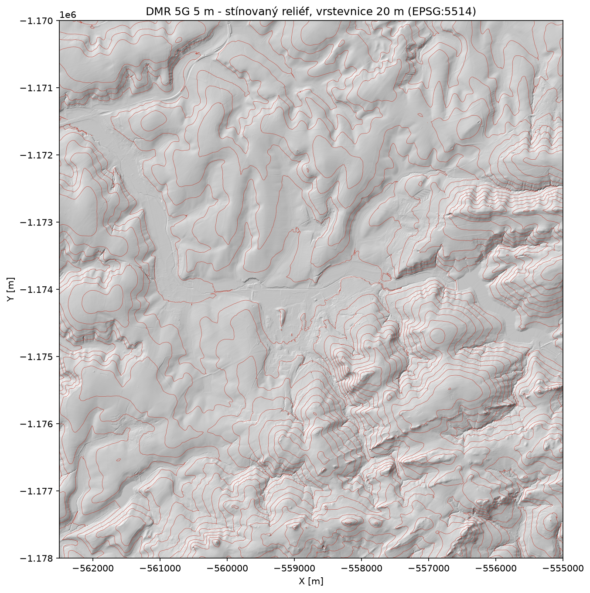
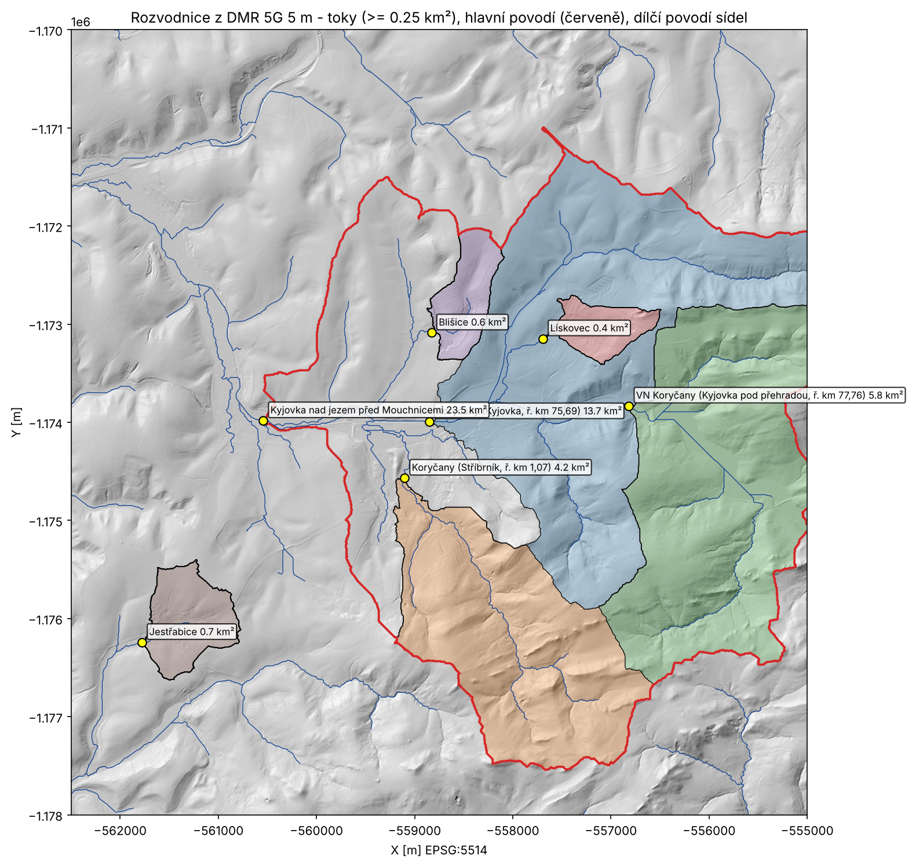
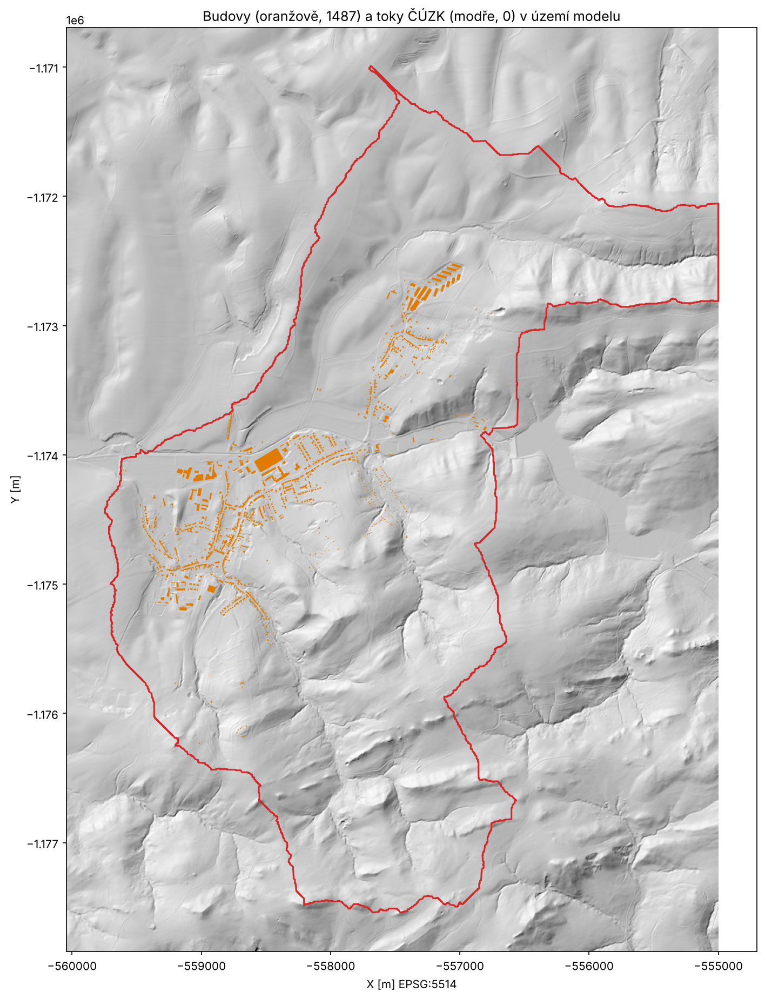
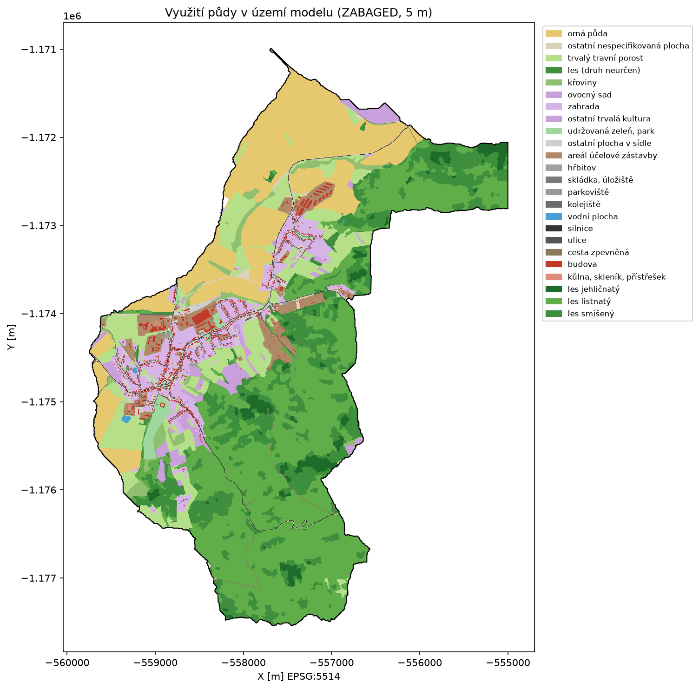
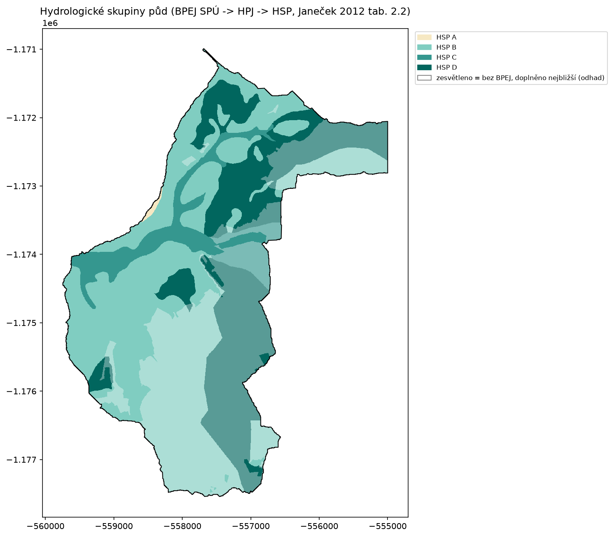
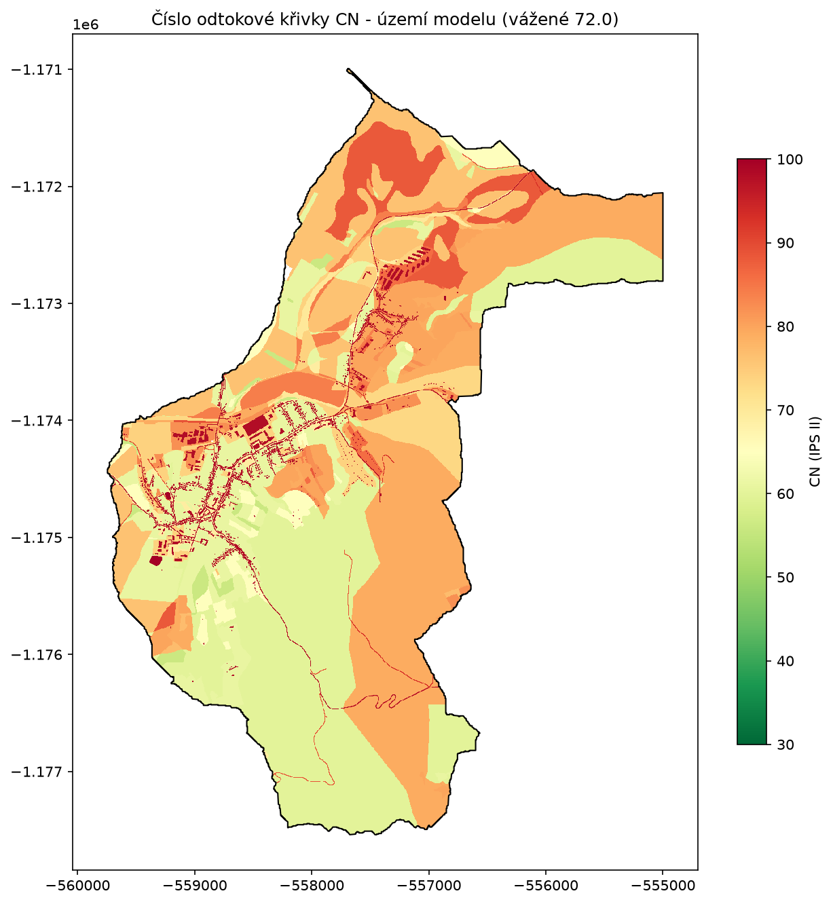

Osvětový model zadržování vody v krajině pro jednu obec. Nositel: skautský oddíl Hříběcí hory, Koryčany. Nekomerční, veřejné, otevřený kód a data.
Stav k 19. 10. 2026 · drátěný prototyp rozhraní · repozitář na GitHubu
Jednoduchá webová aplikace, ve které obyvatelé Koryčan uvidí reálná data o své krajině (terén, odtok vody, půda, toky, budovy) a mohou si na vlastním pozemku nebo v celé obci "zkusit" opatření proti suchu, přívalům a horku: tůně, průlehy, výsadby, zasakování ze střech, změnu hospodaření. Aplikace ukáže orientační efekt v číslech a mapě a u každého opatření, kdo ho může udělat a z čeho se dá zaplatit.
Cíl není projektová dokumentace. Cíl je, aby víc lidí ve městě pochopilo souvislosti a vědělo, co může udělat kdo: obec, vlastník půdy, zahrádkář, škola. Partner: ZŠ Koryčany (program Ekoškola). Vše běží bez serveru, zdrojový kód je pod licencí MIT, odvozená data a texty CC BY 4.0.
Hranici neurčuje katastr, ale rozvodnice odvozená z výškopisu DMR 5G: povodí Kyjovky k profilu těsně pod soutokem se Stříbrníkem v Koryčanech, bez povodí nad hrází vodní nádrže Koryčany (odtok z nádrže je řízený). Model řeší rozhodování jedné obce, ne mikroregionu.
Podklad: Základní topografická mapa ČÚZK (WMTS, "ČÚZK - on-line"). Kliknutím na povodí nebo budovu se zobrazí údaje.
| Blok | Výsledek |
|---|---|
| Katalog opatření | 58 opatření v 10 skupinách (zahrada, střecha, veřejný prostor, orná půda, louka, les, tok a niva, cesty a strže, měření, nástroje vlastníka a obce), 81 citovaných zdrojů, 10 dotačních programů. Každé opatření má: pro jaký extrém pomáhá, rozsah účinku se zdrojem, kdo ho realizuje, financování. Strojově čitelný JSON generovaný skriptem. |
| Seznam datových vrstev | WMS/WMTS služby ČÚZK, VÚMOP, ČGS, VÚV TGM, AOPK, CENIA s ověřenými adresami a licencemi; co lze použít živě a co vyžaduje souhlas. |
| Terén | 12 listů DMR 5G (ČÚZK, CC BY 4.0) -> rastr 5 m v S-JTSK, 7,5 × 8 km, stínovaný reliéf ke kontrole. |
| Odtok a rozvodnice | Vyplnění prohlubní, směr odtoku (D8), akumulace, sklon, expozice, údolnice; povodí k hlásným profilům ČHMÚ/města (Kyjovka ř. km 75,69; Stříbrník ř. km 1,07; pod přehradou ř. km 77,76) a k obcím. Hranice ověřena proti mapě a místní znalosti. |
| Budovy a toky | INSPIRE Budovy ČÚZK (obec Koryčany) ořezané na území, bez čísel popisných a adres; INSPIRE hydrografická síť ČÚZK. |
| Využití půdy | ZABAGED polohopis (WFS ČÚZK) vypálený do mřížky 5 m: les 705 ha (50 %, z toho listnatý 465, smíšený 144, jehličnatý 36), orná 261 ha, louky 153 ha, zahrady a sady 121 ha, zástavba a areály 95 ha, komunikace 19 ha. Hranice území ověřena proti oficiálním rozvodnicím ČHP (ZABAGED): shoda. |
| Půdy a odtok (předběžně) | Hydrologické skupiny půd z BPEJ (SPÚ, otevřená data) podle metodiky Janeček 2012; lesy a intravilán bez BPEJ doplněny odhadem (48 % území, viditelně označeno) - zde pomohou data VÚMOP. Číslo odtokové křivky CN pro každou buňku 5 m (vážené CN území 72), odtok z ilustračních dešťů 20/40/60 mm za území i dílčí povodí. |
| Měření | Inventura hlásných profilů; vlastní optické čidlo na Stříbrníku u Kachníku (léto 2026, epizody přívalů); žádost o data Povodí Moravy v přípravě. |
| Prototyp rozhraní | Drátěná verze se skutečným katalogem a vzorci nad syntetickým pozemkem: režimy Můj pozemek, Celé území, Katalog, O modelu. Běží na GitHub Pages. |






Další krok je výpočet odtoku z návrhového deště metodou SCS-CN a orientační erozní ohroženosti (USLE). Obojí stojí na půdních datech, která nelze odvodit z terénu:
| Vrstva | K čemu v modelu |
|---|---|
| Hydrologické skupiny půd (HSP A-D) | Číslo CN pro každou buňku 5 m (HSP × využití půdy) -> objem odtoku z přívalu, účinek zasakovacích a retenčních opatření na pozemku i za obec. |
| BPEJ / hlavní půdní jednotky | Faktor erodovatelnosti K (USLE), hloubka půdy a retenční vodní kapacita -> kolik vody půda udrží, kde má smysl zvyšovat organickou hmotu. |
| Erozní ohroženost (vodní eroze, DSO) | Kontrola vlastního výpočtu LS × K a výběr míst pro meze, průlehy a zasakovací pásy. |
| Zamokřené půdy, meliorace | Kde dávají smysl tůně a mokřady, kde naopak drenáž vodu odvádí. |
Jak budou data použita: jen uvnitř výpočtu pro území 14 km² v k. ú. Koryčany, Lískovec u Koryčan, Blišice a Jestřabice. Zdrojové rastry a vektory se nebudou redistribuovat ani zveřejňovat; v aplikaci se zobrazí buď odvozené výsledky (CN, odtok, ohroženost) s uvedením zdroje, nebo oficiální WMS VÚMOP s povinným uvedením původu. Účel je nekomerční a osvětový, výstup bude zveřejněn pod hlavičkou skautského oddílu zdarma. Formát ideálně GeoTIFF nebo shapefile/GeoPackage v S-JTSK (EPSG:5514), výřez podle hranice území (GeoJSON ke stažení v repozitáři: data/povodi.geojson, polygon typ uzemi_modelu).
Na co to nestačí: model nenahrazuje projektovou dokumentaci, 2D hydraulický model povodně ani kalibrovaný srážko-odtokový model. Dokud není porovnán s měřením, nese označení "nevalidováno". Slouží k pochopení souvislostí a k prioritizaci, ne k návrhu staveb.